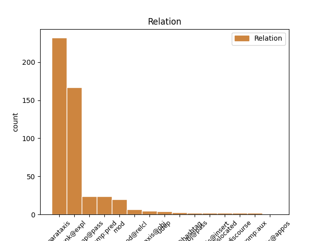
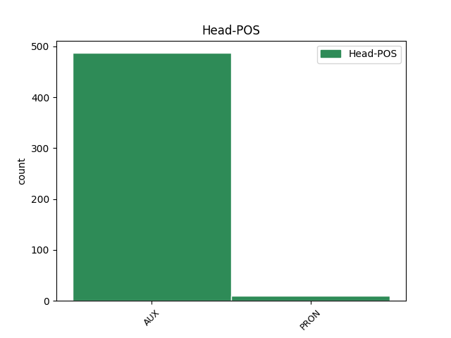
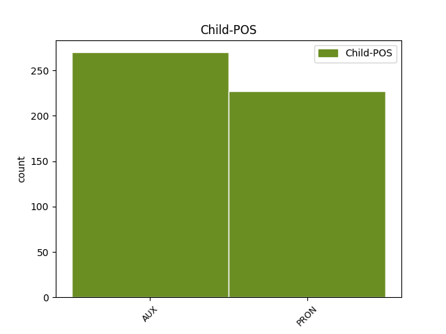

Distribution of features within this leaf



Agreement Rules sorted by frequency.
- When the dependent token is the parataxis(parataxis) of the head token, and the head token is AUX and the dependent token is AUX.
1 @user _ _ _ _ 0 _ _ _
2 " _ _ _ _ 0 _ _ _
3 La _ _ _ _ 0 _ _ _
4 vita _ _ _ _ 0 _ _ _
5 e _ _ _ _ 0 _ _ _
6 i _ _ _ _ 0 _ _ _
7 sogni _ _ _ _ 0 _ _ _
8 sono essere AUX V Mood=Ind|Number=Plur|Person=3|Tense=Pres|VerbForm=Fin 0 _ _ _
9 fogli _ _ _ _ 0 _ _ _
10 di _ _ _ _ 0 _ _ _
11 uno _ _ _ _ 0 _ _ _
12 stesso _ _ _ _ 0 _ _ _
13 libro _ _ _ _ 0 _ _ _
14 : _ _ _ _ 0 _ _ _
15 legger _ _ _ _ 0 _ _ _
16 li _ _ _ _ 0 _ _ _
17 in _ _ _ _ 0 _ _ _
18 ordine _ _ _ _ 0 _ _ _
19 è essere AUX V Mood=Ind|Number=Sing|Person=3|Tense=Pres|VerbForm=Fin 8 parataxis _ _
20 vivere _ _ _ _ 0 _ _ _
21 , _ _ _ _ 0 _ _ _
22 sfogliar _ _ _ _ 0 _ _ _
23 li _ _ _ _ 0 _ _ _
24 a _ _ _ _ 0 _ _ _
25 caso _ _ _ _ 0 _ _ _
26 è _ _ _ _ 0 _ _ _
27 sognare _ _ _ _ 0 _ _ _
28 . _ _ _ _ 0 _ _ _
29 " _ _ _ _ 0 _ _ _
30 #aforismiquotidiani _ _ _ _ 0 _ _ _
1 B _ _ _ _ 0 _ _ _
2 : _ _ _ _ 0 _ _ _
3 In _ _ _ _ 0 _ _ _
4 il _ _ _ _ 0 _ _ _
5 governo _ _ _ _ 0 _ _ _
6 Monti _ _ _ _ 0 _ _ _
7 ci _ _ _ _ 0 _ _ _
8 sono _ _ _ _ 0 _ _ _
9 buone _ _ _ _ 0 _ _ _
10 professionalità _ _ _ _ 0 _ _ _
11 con _ _ _ _ 0 _ _ _
12 ministri _ _ _ _ 0 _ _ _
13 competenti _ _ _ _ 0 _ _ _
14 in _ _ _ _ 0 _ _ _
15 la _ _ _ _ 0 _ _ _
16 materia _ _ _ _ 0 _ _ _
17 di _ _ _ _ 0 _ _ _
18 cui _ _ _ _ 0 _ _ _
19 si si PRON PC Clitic=Yes|Person=3|PronType=Prs 20 unk@expl _ _
20 devono dovere AUX VM Mood=Ind|Number=Plur|Person=3|Tense=Pres|VerbForm=Fin 0 _ _ _
21 occupare _ _ _ _ 0 _ _ _
22 . _ _ _ _ 0 _ _ _
23 Avrà _ _ _ _ 0 _ _ _
24 pensato _ _ _ _ 0 _ _ _
25 a _ _ _ _ 0 _ _ _
26 i _ _ _ _ 0 _ _ _
27 suoi _ _ _ _ 0 _ _ _
28 ? _ _ _ _ 0 _ _ _
1 Il _ _ _ _ 0 _ _ _
2 governo _ _ _ _ 0 _ _ _
3 #Monti _ _ _ _ 0 _ _ _
4 non _ _ _ _ 0 _ _ _
5 può _ _ _ _ 0 _ _ _
6 fare _ _ _ _ 0 _ _ _
7 ciò _ _ _ _ 0 _ _ _
8 che _ _ _ _ 0 _ _ _
9 si si PRON PC Clitic=Yes|Person=3|PronType=Prs 10 comp@pass _ _
10 può potere AUX VM Mood=Ind|Number=Sing|Person=3|Tense=Pres|VerbForm=Fin 0 _ _ _
11 fare _ _ _ _ 0 _ _ _
12 per _ _ _ _ 0 _ _ _
13 il _ _ _ _ 0 _ _ _
14 bene _ _ _ _ 0 _ _ _
15 di _ _ _ _ 0 _ _ _
16 il _ _ _ _ 0 _ _ _
17 Paese _ _ _ _ 0 _ _ _
18 a _ _ _ _ 0 _ _ _
19 causa _ _ _ _ 0 _ _ _
20 di _ _ _ _ 0 _ _ _
21 l' _ _ _ _ 0 _ _ _
22 indiretto _ _ _ _ 0 _ _ _
23 controllo _ _ _ _ 0 _ _ _
24 da _ _ _ _ 0 _ _ _
25 parte _ _ _ _ 0 _ _ _
26 di _ _ _ _ 0 _ _ _
27 #Berlusconi _ _ _ _ 0 _ _ _
28 fonte _ _ _ _ 0 _ _ _
29 : _ _ _ _ 0 _ _ _
30 Idv _ _ _ _ 0 _ _ _
1 Secondo _ _ _ _ 0 _ _ _
2 me _ _ _ _ 0 _ _ _
3 Mario _ _ _ _ 0 _ _ _
4 Monti _ _ _ _ 0 _ _ _
5 è _ _ _ _ 0 _ _ _
6 un _ _ _ _ 0 _ _ _
7 infame _ _ _ _ 0 _ _ _
8 che _ _ _ _ 0 _ _ _
9 detta _ _ _ _ 0 _ _ _
10 leggi _ _ _ _ 0 _ _ _
11 credendo _ _ _ _ 0 _ _ _
12 di _ _ _ _ 0 _ _ _
13 migliorare _ _ _ _ 0 _ _ _
14 l' _ _ _ _ 0 _ _ _
15 Italia _ _ _ _ 0 _ _ _
16 . _ _ _ _ 0 _ _ _
17 Tanto _ _ _ _ 0 _ _ _
18 non _ _ _ _ 0 _ _ _
19 è essere AUX V Mood=Ind|Number=Sing|Person=3|Tense=Pres|VerbForm=Fin 0 _ _ _
20 lui egli PRON PE Number=Sing|Person=3|PronType=Prs 19 comp:pred _ _
21 ad _ _ _ _ 0 _ _ _
22 arrivare _ _ _ _ 0 _ _ _
23 a _ _ _ _ 0 _ _ _
24 stento _ _ _ _ 0 _ _ _
25 a _ _ _ _ 0 _ _ _
26 fine _ _ _ _ 0 _ _ _
27 mese _ _ _ _ 0 _ _ _
28 . _ _ _ _ 0 _ _ _
1 3 _ _ _ _ 0 _ _ _
2 anni _ _ _ _ 0 _ _ _
3 fà _ _ _ _ 0 _ _ _
4 ero essere AUX V Mood=Ind|Number=Sing|Person=1|Tense=Imp|VerbForm=Fin 0 _ _ _
5 milanista _ _ _ _ 0 _ _ _
6 ... _ _ _ _ 0 _ _ _
7 Poi _ _ _ _ 0 _ _ _
8 sono essere AUX VA Mood=Ind|Number=Sing|Person=1|Tense=Pres|VerbForm=Fin 4 mod _ _
9 diventata _ _ _ _ 0 _ _ _
10 juventina _ _ _ _ 0 _ _ _
11 ... _ _ _ _ 0 _ _ _
12 però _ _ _ _ 0 _ _ _
13 , _ _ _ _ 0 _ _ _
14 boh _ _ _ _ 0 _ _ _
15 , _ _ _ _ 0 _ _ _
16 mi _ _ _ _ 0 _ _ _
17 sento _ _ _ _ 0 _ _ _
18 ancora _ _ _ _ 0 _ _ _
19 di _ _ _ _ 0 _ _ _
20 appartenenza _ _ _ _ 0 _ _ _
21 milanista _ _ _ _ 0 _ _ _
22 ... _ _ _ _ 0 _ _ _
23 mi _ _ _ _ 0 _ _ _
24 sento _ _ _ _ 0 _ _ _
25 il _ _ _ _ 0 _ _ _
26 sangue _ _ _ _ 0 _ _ _
27 milanista _ _ _ _ 0 _ _ _
1 @user _ _ _ _ 0 _ _ _
2 peccato _ _ _ _ 0 _ _ _
3 che _ _ _ _ 0 _ _ _
4 non _ _ _ _ 0 _ _ _
5 c' _ _ _ _ 0 _ _ _
6 erano _ _ _ _ 0 _ _ _
7 date _ _ _ _ 0 _ _ _
8 in _ _ _ _ 0 _ _ _
9 Sicilia _ _ _ _ 0 _ _ _
10 di _ _ _ _ 0 _ _ _
11 il _ _ _ _ 0 _ _ _
12 suo _ _ _ _ 0 _ _ _
13 tour _ _ _ _ 0 _ _ _
14 :( _ _ _ _ 0 _ _ _
15 e _ _ _ _ 0 _ _ _
16 io io PRON PE Number=Sing|Person=1|PronType=Prs 0 _ _ _
17 che _ _ _ _ 0 _ _ _
18 avevo avere AUX VA Mood=Ind|Number=Sing|Person=1|Tense=Imp|VerbForm=Fin 16 mod@relcl _ _
19 anche _ _ _ _ 0 _ _ _
20 imparato _ _ _ _ 0 _ _ _
21 il _ _ _ _ 0 _ _ _
22 balletto _ _ _ _ 0 _ _ _
23 di _ _ _ _ 0 _ _ _
24 Anal _ _ _ _ 0 _ _ _
25 Beat _ _ _ _ 0 _ _ _
26 .. _ _ _ _ 0 _ _ _
27 #delusione _ _ _ _ 0 _ _ _
1 @user _ _ _ _ 0 _ _ _
2 ma _ _ _ _ 0 _ _ _
3 che _ _ _ _ 0 _ _ _
4 bello _ _ _ _ 0 _ _ _
5 , _ _ _ _ 0 _ _ _
6 sono essere AUX V Mood=Ind|Number=Sing|Person=1|Tense=Pres|VerbForm=Fin 0 _ _ _
7 felice _ _ _ _ 0 _ _ _
8 anche _ _ _ _ 0 _ _ _
9 io _ _ _ _ 0 _ _ _
10 per _ _ _ _ 0 _ _ _
11 te _ _ _ _ 0 _ _ _
12 . _ _ _ _ 0 _ _ _
13 Io io PRON PE Number=Sing|Person=1|PronType=Prs 6 parataxis _ _
14 che _ _ _ _ 0 _ _ _
15 non _ _ _ _ 0 _ _ _
16 sono _ _ _ _ 0 _ _ _
17 proprio _ _ _ _ 0 _ _ _
18 il _ _ _ _ 0 _ _ _
19 massimo _ _ _ _ 0 _ _ _
20 in _ _ _ _ 0 _ _ _
21 questo _ _ _ _ 0 _ _ _
22 periodo _ _ _ _ 0 _ _ _
23 . _ _ _ _ 0 _ _ _
1 @user _ _ _ _ 0 _ _ _
2 ci ci PRON PC Clitic=Yes|Number=Plur|Person=1|PronType=Prs 3 udep _ _
3 ho avere AUX VA Mood=Ind|Number=Sing|Person=1|Tense=Pres|VerbForm=Fin 0 _ _ _
4 fatto _ _ _ _ 0 _ _ _
5 tutte _ _ _ _ 0 _ _ _
6 le _ _ _ _ 0 _ _ _
7 giovanili _ _ _ _ 0 _ _ _
8 più _ _ _ _ 0 _ _ _
9 3 _ _ _ _ 0 _ _ _
10 - _ _ _ _ 0 _ _ _
11 4 _ _ _ _ 0 _ _ _
12 anni _ _ _ _ 0 _ _ _
13 con _ _ _ _ 0 _ _ _
14 la _ _ _ _ 0 _ _ _
15 prima _ _ _ _ 0 _ _ _
16 squadra _ _ _ _ 0 _ _ _
17 . _ _ _ _ 0 _ _ _
18 Ogni _ _ _ _ 0 _ _ _
19 tanto _ _ _ _ 0 _ _ _
20 mi _ _ _ _ 0 _ _ _
21 alleno _ _ _ _ 0 _ _ _
22 lì _ _ _ _ 0 _ _ _
23 ancora _ _ _ _ 0 _ _ _
24 adesso _ _ _ _ 0 _ _ _
25 che _ _ _ _ 0 _ _ _
26 non _ _ _ _ 0 _ _ _
27 ho _ _ _ _ 0 _ _ _
28 una _ _ _ _ 0 _ _ _
29 squadra _ _ _ _ 0 _ _ _
1 Governo _ _ _ _ 0 _ _ _
2 Monti _ _ _ _ 0 _ _ _
3 : _ _ _ _ 0 _ _ _
4 Golpe _ _ _ _ 0 _ _ _
5 ? _ _ _ _ 0 _ _ _
6 Alieni _ _ _ _ 0 _ _ _
7 ? _ _ _ _ 0 _ _ _
8 Massoni _ _ _ _ 0 _ _ _
9 ? _ _ _ _ 0 _ _ _
10 : _ _ _ _ 0 _ _ _
11 Il _ _ _ _ 0 _ _ _
12 Tg1 _ _ _ _ 0 _ _ _
13 è essere AUX V Mood=Ind|Number=Sing|Person=3|Tense=Pres|VerbForm=Fin 0 _ _ _
14 attonito _ _ _ _ 0 _ _ _
15 : _ _ _ _ 0 _ _ _
16 ma _ _ _ _ 0 _ _ _
17 chi _ _ _ _ 0 _ _ _
18 sono essere AUX V Mood=Ind|Number=Plur|Person=3|Tense=Pres|VerbForm=Fin 13 parataxis@obj _ _
19 questi _ _ _ _ 0 _ _ _
20 ? _ _ _ _ 0 _ _ _
21 Perché _ _ _ _ 0 _ _ _
22 fra _ _ _ _ 0 _ _ _
23 le _ _ _ _ 0 _ _ _
24 donne _ _ _ _ 0 _ _ _
25 non _ _ _ _ 0 _ _ _
26 ce _ _ _ _ 0 _ _ _
27 n' _ _ _ _ 0 _ _ _
28 è _ _ _ _ 0 _ _ _
29 ne... _ _ _ _ 0 _ _ _
30 http://t.co/0lVOZdTc _ _ _ _ 0 _ _ _
1 Per _ _ _ _ 0 _ _ _
2 SWG _ _ _ _ 0 _ _ _
3 il _ _ _ _ 0 _ _ _
4 movimento _ _ _ _ 0 _ _ _
5 di _ _ _ _ 0 _ _ _
6 Beppe _ _ _ _ 0 _ _ _
7 #Grillo _ _ _ _ 0 _ _ _
8 è essere AUX V Mood=Ind|Number=Sing|Person=3|Tense=Pres|VerbForm=Fin 0 _ _ _
9 il _ _ _ _ 0 _ _ _
10 terzo _ _ _ _ 0 _ _ _
11 partito _ _ _ _ 0 _ _ _
12 a _ _ _ _ 0 _ _ _
13 il _ _ _ _ 0 _ _ _
14 7,2 _ _ _ _ 0 _ _ _
15 . _ _ _ _ 0 _ _ _
16 Con _ _ _ _ 0 _ _ _
17 quello _ _ _ _ 0 _ _ _
18 che _ _ _ _ 0 _ _ _
19 c' _ _ _ _ 0 _ _ _
20 è _ _ _ _ 0 _ _ _
21 adesso _ _ _ _ 0 _ _ _
22 anche _ _ _ _ 0 _ _ _
23 un _ _ _ _ 0 _ _ _
24 comico _ _ _ _ 0 _ _ _
25 potrebbe potere AUX VM Mood=Cnd|Number=Sing|Person=3|Tense=Pres|VerbForm=Fin 8 parataxis@hashtag _ _
26 essere _ _ _ _ 0 _ _ _
27 #premier _ _ _ _ 0 _ _ _
1 È essere AUX V Mood=Ind|Number=Sing|Person=3|Tense=Pres|VerbForm=Fin 0 _ _ _
2 bello _ _ _ _ 0 _ _ _
3 cambiare _ _ _ _ 0 _ _ _
4 lavoro _ _ _ _ 0 _ _ _
5 ha avere AUX VA Mood=Ind|Number=Sing|Person=3|Tense=Pres|VerbForm=Fin 1 parataxis@insert _ _
6 detto _ _ _ _ 0 _ _ _
7 Mario _ _ _ _ 0 _ _ _
8 Monti _ _ _ _ 0 _ _ _
9 , _ _ _ _ 0 _ _ _
10 68 _ _ _ _ 0 _ _ _
11 anni _ _ _ _ 0 _ _ _
12 , _ _ _ _ 0 _ _ _
13 pornodivo _ _ _ _ 0 _ _ _
14 ! _ _ _ _ 0 _ _ _
15 @user _ _ _ _ 0 _ _ _
1 MARIO _ _ _ _ 0 _ _ _
2 MONTI _ _ _ _ 0 _ _ _
3 MA _ _ _ _ 0 _ _ _
4 VAFFANCULO _ _ _ _ 0 _ _ _
5 TU tu PRON PE Number=Sing|Person=2|PronType=Prs 0 _ _ _
6 E _ _ _ _ 0 _ _ _
7 TUTTO _ _ _ _ 0 _ _ _
8 IL _ _ _ _ 0 _ _ _
9 GOVERNO _ _ _ _ 0 _ _ _
10 ITALIANO _ _ _ _ 0 _ _ _
11 ! _ _ _ _ 0 _ _ _
12 VOI _ _ _ _ 0 _ _ _
13 SIETE essere AUX V Mood=Ind|Number=Plur|Person=2|Tense=Pres|VerbForm=Fin 5 parataxis _ _
14 LA _ _ _ _ 0 _ _ _
15 NOSTRA _ _ _ _ 0 _ _ _
16 ROVINA _ _ _ _ 0 _ _ _
17 ! _ _ _ _ 0 _ _ _
1 Il _ _ _ _ 0 _ _ _
2 governo _ _ _ _ 0 _ _ _
3 monti _ _ _ _ 0 _ _ _
4 unisce _ _ _ _ 0 _ _ _
5 l _ _ _ _ 0 _ _ _
6 Italia _ _ _ _ 0 _ _ _
7 . _ _ _ _ 0 _ _ _
8 Peccato _ _ _ _ 0 _ _ _
9 che _ _ _ _ 0 _ _ _
10 in _ _ _ _ 0 _ _ _
11 #Rai _ _ _ _ 0 _ _ _
12 non _ _ _ _ 0 _ _ _
13 lo lo PRON PC Clitic=Yes|Gender=Masc|Number=Sing|Person=3|PronType=Prs 15 subj@pass _ _
14 si _ _ _ _ 0 _ _ _
15 sia essere AUX VA Mood=Sub|Number=Sing|Person=3|Tense=Pres|VerbForm=Fin 0 _ _ _
16 capito _ _ _ _ 0 _ _ _
1 Nessun _ _ _ _ 0 _ _ _
2 ministro _ _ _ _ 0 _ _ _
3 di _ _ _ _ 0 _ _ _
4 il _ _ _ _ 0 _ _ _
5 governo _ _ _ _ 0 _ _ _
6 #Monti _ _ _ _ 0 _ _ _
7 ci _ _ _ _ 0 _ _ _
8 vuole volere AUX VM Mood=Ind|Number=Sing|Person=3|Tense=Pres|VerbForm=Fin 0 _ _ _
9 ( _ _ _ _ 0 _ _ _
10 può potere AUX VM Mood=Ind|Number=Sing|Person=3|Tense=Pres|VerbForm=Fin 8 comp:aux _ SpaceAfter=No
11 ) _ _ _ _ 0 _ _ _
12 raccontare _ _ _ _ 0 _ _ _
13 quanto _ _ _ _ 0 _ _ _
14 la _ _ _ _ 0 _ _ _
15 #manovra _ _ _ _ 0 _ _ _
16 sia _ _ _ _ 0 _ _ _
17 condizionata _ _ _ _ 0 _ _ _
18 da _ _ _ _ 0 _ _ _
19 la _ _ _ _ 0 _ _ _
20 maggioranza _ _ _ _ 0 _ _ _
21 parlamentare _ _ _ _ 0 _ _ _
22 ? _ _ _ _ 0 _ _ _
23 #Ballaro _ _ _ _ 0 _ _ _
1 Il _ _ _ _ 0 _ _ _
2 Governo _ _ _ _ 0 _ _ _
3 #Monti _ _ _ _ 0 _ _ _
4 e' essere AUX V Mood=Ind|Number=Sing|Person=3|Tense=Pres|VerbForm=Fin 0 _ _ _
5 una _ _ _ _ 0 _ _ _
6 spinta _ _ _ _ 0 _ _ _
7 a _ _ _ _ 0 _ _ _
8 la _ _ _ _ 0 _ _ _
9 serietà _ _ _ _ 0 _ _ _
10 e _ _ _ _ 0 _ _ _
11 a _ _ _ _ 0 _ _ _
12 lo _ _ _ _ 0 _ _ _
13 sviluppo _ _ _ _ 0 _ _ _
14 di _ _ _ _ 0 _ _ _
15 il _ _ _ _ 0 _ _ _
16 nostro _ _ _ _ 0 _ _ _
17 Paese _ _ _ _ 0 _ _ _
18 . _ _ _ _ 0 _ _ _
19 E' essere AUX V Mood=Ind|Number=Sing|Person=3|Tense=Pres|VerbForm=Fin 4 parataxis@appos _ _
20 un _ _ _ _ 0 _ _ _
21 #armistizio _ _ _ _ 0 _ _ _
22 , _ _ _ _ 0 _ _ _
23 i _ _ _ _ 0 _ _ _
24 partiti _ _ _ _ 0 _ _ _
25 sotterrino _ _ _ _ 0 _ _ _
26 le _ _ _ _ 0 _ _ _
27 asce _ _ _ _ 0 _ _ _
28 di _ _ _ _ 0 _ _ _
29 guerra _ _ _ _ 0 _ _ _
30 . _ _ _ _ 0 _ _ _
Disagree Examples:
1 x: _ _ _ _ 0 _ _ _
2 Ti _ _ _ _ 0 _ _ _
3 sei essere AUX VA Mood=Ind|Number=Sing|Person=2|Tense=Pres|VerbForm=Fin 0 _ _ _
4 commosso _ _ _ _ 0 _ _ _
5 dopo _ _ _ _ 0 _ _ _
6 lo _ _ _ _ 0 _ _ _
7 show _ _ _ _ 0 _ _ _
8 vero _ _ _ _ 0 _ _ _
9 ? _ _ _ _ 0 _ _ _
10 Harry _ _ _ _ 0 _ _ _
11 : _ _ _ _ 0 _ _ _
12 Sì _ _ _ _ 0 _ _ _
13 sono essere AUX V Mood=Ind|Number=Sing|Person=1|Tense=Pres|VerbForm=Fin 3 parataxis _ _
14 molto _ _ _ _ 0 _ _ _
15 affezionato _ _ _ _ 0 _ _ _
16 a _ _ _ _ 0 _ _ _
17 l' _ _ _ _ 0 _ _ _
18 Italia _ _ _ _ 0 _ _ _
19 *--* _ _ _ _ 0 _ _ _
20 http://t.co/5pO2PXK3 _ _ _ _ 0 _ _ _
1 @user _ _ _ _ 0 _ _ _
2 Ho _ _ _ _ 0 _ _ _
3 amato _ _ _ _ 0 _ _ _
4 Carver _ _ _ _ 0 _ _ _
5 Sono essere AUX V Mood=Ind|Number=Sing|Person=1|Tense=Pres|VerbForm=Fin 0 _ _ _
6 stupefatta _ _ _ _ 0 _ _ _
7 Come _ _ _ _ 0 _ _ _
8 si _ _ _ _ 0 _ _ _
9 può potere AUX VM Mood=Ind|Number=Sing|Person=3|Tense=Pres|VerbForm=Fin 5 parataxis _ _
10 fare _ _ _ _ 0 _ _ _
11 il _ _ _ _ 0 _ _ _
12 confronto _ _ _ _ 0 _ _ _
13 con _ _ _ _ 0 _ _ _
14 un _ _ _ _ 0 _ _ _
15 cantante _ _ _ _ 0 _ _ _
16 ? _ _ _ _ 0 _ _ _
1 Se _ _ _ _ 0 _ _ _
2 uno _ _ _ _ 0 _ _ _
3 zoticone _ _ _ _ 0 _ _ _
4 come _ _ _ _ 0 _ _ _
5 #Grillo _ _ _ _ 0 _ _ _
6 ha _ _ _ _ 0 _ _ _
7 consensi _ _ _ _ 0 _ _ _
8 è essere AUX V Mood=Ind|Number=Sing|Person=3|Tense=Pres|VerbForm=Fin 0 _ _ _
9 grazie _ _ _ _ 0 _ _ _
10 a _ _ _ _ 0 _ _ _
11 questa _ _ _ _ 0 _ _ _
12 classe _ _ _ _ 0 _ _ _
13 politica _ _ _ _ 0 _ _ _
14 di _ _ _ _ 0 _ _ _
15 zoticoni _ _ _ _ 0 _ _ _
16 , _ _ _ _ 0 _ _ _
17 ma _ _ _ _ 0 _ _ _
18 non _ _ _ _ 0 _ _ _
19 abbiamo avere AUX VA Mood=Ind|Number=Plur|Person=1|Tense=Pres|VerbForm=Fin 8 parataxis _ _
20 imparato _ _ _ _ 0 _ _ _
21 nulla _ _ _ _ 0 _ _ _
22 ? _ _ _ _ 0 _ _ _
1 #Grillo _ _ _ _ 0 _ _ _
2 e' essere AUX V Mood=Ind|Number=Sing|Person=3|Tense=Pres|VerbForm=Fin 0 _ _ _
3 da _ _ _ _ 0 _ _ _
4 anni _ _ _ _ 0 _ _ _
5 che _ _ _ _ 0 _ _ _
6 parla _ _ _ _ 0 _ _ _
7 di _ _ _ _ 0 _ _ _
8 politica _ _ _ _ 0 _ _ _
9 !! _ _ _ _ 0 _ _ _
10 voi _ _ _ _ 0 _ _ _
11 vi _ _ _ _ 0 _ _ _
12 siete essere AUX VA Mood=Ind|Number=Plur|Person=2|Tense=Pres|VerbForm=Fin 2 parataxis _ _
13 svegliati _ _ _ _ 0 _ _ _
14 adesso _ _ _ _ 0 _ _ _
15 ! _ _ _ _ 0 _ _ _
16 Esiste _ _ _ _ 0 _ _ _
17 un _ _ _ _ 0 _ _ _
18 alternativa _ _ _ _ 0 _ _ _
19 a _ _ _ _ 0 _ _ _
20 la _ _ _ _ 0 _ _ _
21 mala _ _ _ _ 0 _ _ _
22 politica _ _ _ _ 0 _ _ _
23 ! _ _ _ _ 0 _ _ _
24 E' _ _ _ _ 0 _ _ _
25 il _ _ _ _ 0 _ _ _
26 @user _ _ _ _ 0 _ _ _
1 Ciao _ _ _ _ 0 _ _ _
2 Tata _ _ _ _ 0 _ _ _
3 ! _ _ _ _ 0 _ _ _
4 ..... _ _ _ _ 0 _ _ _
5 tu _ _ _ _ 0 _ _ _
6 ti _ _ _ _ 0 _ _ _
7 sei essere AUX VA Mood=Ind|Number=Sing|Person=2|Tense=Pres|VerbForm=Fin 0 _ _ _
8 innamorata _ _ _ _ 0 _ _ _
9 di _ _ _ _ 0 _ _ _
10 l' _ _ _ _ 0 _ _ _
11 Italia _ _ _ _ 0 _ _ _
12 ..... _ _ _ _ 0 _ _ _
13 io _ _ _ _ 0 _ _ _
14 di _ _ _ _ 0 _ _ _
15 la _ _ _ _ 0 _ _ _
16 tua _ _ _ _ 0 _ _ _
17 Spagna _ _ _ _ 0 _ _ _
18 ...... _ _ _ _ 0 _ _ _
19 siamo essere AUX V Mood=Ind|Number=Plur|Person=1|Tense=Pres|VerbForm=Fin 7 parataxis _ _
20 pari _ _ _ _ 0 _ _ _
21 ! _ _ _ _ 0 _ _ _